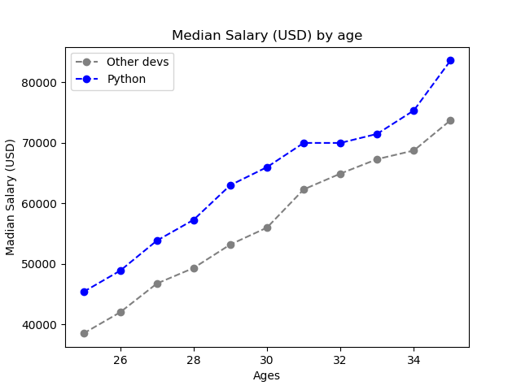

If you think that you can't get a job as a IT specialist because your not young to do this, or you can't because you need to get a masters degree, its too late to start learning or that you need to be a genius at maths, that means that you have heard too many myths about starting a career in IT. Only about 28% of programmers/data scientists / data analysists developers, quantum computing devs and much more, have a master degree! You don't need to be a genius, you don't need to have a masters degree (not even bachlers degree) and you don't need to be young to start a new way of working. About 12% of really good programmers have from 30-58 years! Let's look at how much money (in a year) can you make at a different age.
As you can see on this graph, the older you are, more money you can make. But that's not what we are looking for. We are looking at the salary and why do so many people make that kind of money with just python language. I will remind you of something else. Only about 28% of programmers, data scientists, etc. have got a masters degree, so theres nothing to worry about (that number is still going down). On the polish course called Coders Lab, there was about 7 or 8 people that have got a master degree and nobody else, and yet everybody was on the same level. It doesn't matter what age you are, gender, hobbies or other. You can become a developer, data scientist, data analisist etc. without any degree. You can just finish a course on sololearn or Coders Lab so that you can have a good paying job and less time taking.